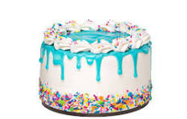

Home
Cake Recipe

Un delicioso pastel casero, suave y esponjoso, perfecto para celebraciones o meriendas.
Ingredients:
- 2 cups of flour
- 1 cup of sugar
- 1/2 cup of butter
- 2 eggs
- 1 cup of milk
- 1 teaspoon of baking powder
- 1 teaspoon of vanilla extract
Instructions:
- Preheat the oven to 350°F (175°C).
- In a large bowl, cream together the butter and sugar until light and fluffy.
- Beat in the eggs one at a time, then stir in the vanilla extract.
- Combine the flour and baking powder, then add to the creamed mixture alternately with the milk. Mix until just combined.
- Pour the batter into a greased and floured 9x9 inch pan.
- Bake for 30 to 40 minutes in the preheated oven, until a toothpick inserted into the center of the cake comes out clean.
- Allow the cake to cool in the pan for 10 minutes, then turn out onto a wire rack